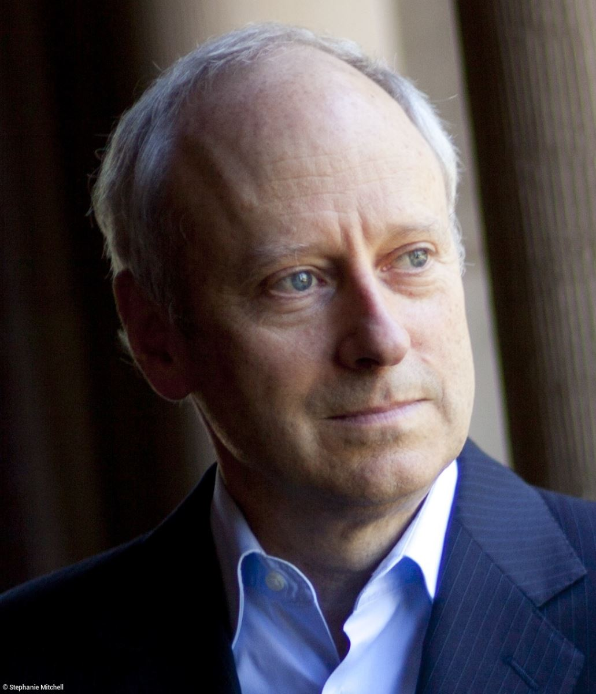

MỤC LỤC
1. LÀM VIỆC ĐÚNG
2. NGUYÊN TẮC HẠNH PHÚC CỰC ĐẠI - THUYẾT VỊ LỢI
3. CHÚNG TA CÓ SỞ HỮU CHÍNH MÌNH KHÔNG? - CHỦ NGHĨA TỰ DO CÁ NHÂN
4. THUÊ TRỢ GIÚP - THỊ TRƯỜNG VÀ ĐẠO ĐỨC
5. ĐỘNG CƠ MỚI QUAN TRỌNG - IMMANUEL KANT
6. LÝ LẼ BÌNH ĐẲNG - JOHN RAWBS
7. TRANH CÃI VỀ CHÍNH SÁCH CHỐNG KỲ THỊ[26]
8. AI XỨNG ĐÁNG VỚI THỨ GÌ - ARISTOTLES
9. CHÚNG TA NỢ NGƯỜI KHÁC NHỮNG GÌ - LÒNG TRUNG THÀNH KHÓ XỬ
10. CÔNG LÝ VÀ LỢI ÍCH CHUNG
CHÚ THÍCH
Giới thiệu
Là cuốn sách triết học đầu tiên trong bộ sách Cánh cửa mở rộng, Phải trái đúng sai tuy là một cuốn sách đòi hỏi nhiều suy luận, nhưng giá trị mà tập sách mang lại cho những độc giả kiên nhẫn là vô giá.
Ở tập sách này, tác giả Michael Sandel sẽ mổ xẻ những vấn đề từng khuấy động nước Mỹ một thời, như vụ bê bối của tổng thống Bill Clinton, vấn đề về hôn nhân đồng tính trong nước dân chủ như Mỹ, huân chương nào cho những chiến sĩ tại Iraq,...
Dưới góc nhìn riêng biệt của chính tác giả và của các triết gia nổi tiếng như Aristotles, Immunuel Kant, John Stuart Mill, John Rawls,... “Quyển sách không cố gắng chứng minh triết gia nào ảnh hưởng tới triết gia nào trong lịch sử tư tưởng chính trị, mục tiêu của quyển sách là mời gọi độc giả xem xét cẩn trọng quan điểm về công lý và sự xem xét mang tính phê bình của mình, để xác định mình nghĩ gì, và tại sao lại vậy.”
Đây là 1 cuốn sách khó đọc. Tuy nhiên, phần thưởng dành cho những độc giả kiên nhẫn thực sự là một trái táo vàng. Đọc cuốn sách này xong, bạn sẽ nhìn những vấn đề mâu thuẫn, trái ngược xung quanh bạn dưới con mắt khác: Hiểu và Thấu đáo.
Trong cuộc sống, điều Đúng - Sai, Phải - Trái luôn luôn tồn tại song song. Cùng 1 vấn đề đó, có người nói Đúng, người bảo Sai, người khăng khăng nói Phải, người quả quyết là Trái. Mỗi người 1 quan điểm, ai cũng có lý. Tuy nhiên, cách hành xử của mỗi người hoàn toàn khác nhau và hầu như những cách hành xử đó không hề có 1 chuẩn gọi là pháp lý hay đạo đức nào cả. Tất cả phán quyết đôi khi không nằm ở đầu, nhưng nằm ở trái tim.
Đảm bảo khi đọc xong cuốn sách này, bạn sẽ nhìn, xử lý những sự việc xung quanh một cách có lý trí và điềm đạm.
Tác giả

Michael J. Sandel sinh ngày 5/3/1953, là Giáo sư Đại học Harvard, triết gia chính trị Mỹ. Ông được bầu làm viện sĩ Viện hàn lâm Nghệ thuật và Khoa học Hoa Kỳ năm 2002. Ông từng là thành viên Ủy ban Đạo đức sinh học của Tổng thống George W. Bush.
Giáo sư Sandel có nhiều tác phẩm khác như Chủ nghĩa tự do và giới hạn của công lý (1998), Bất mãn trong nền dân chủ (1996), Triết học: Các tiểu luận về đạo đức trong chính trị (2005), và Lý lẽ chống lại sự hoàn hảo: Đạo đức trong thời đại kỹ thuật di truyền (2007).
Các tác phẩm của ông đã được dịch ra 15 ngôn ngữ nước ngoài. Ông cũng viết nhiều bài báo cho các tác phẩm lớn như Atlantic Monthly, The New York Times.
Ông được đài truyền hình Nhật Bản NHK và Đài BBC Anh quốc mời diễn thuyết về các chủ đề đạo đức và công lý.
Nhận xét
Michael Sandel - có lẽ là giáo sư đại học nổi tiếng nhất ở Mỹ - đã mang lại “sự minh bạch về đạo đức cho sự lựa chọn mà chúng ta phải đối mặt, với tư cách là công dân trong xã hội dân chủ”. Ông đã chỉ ra rằng sự chia rẽ chính trị không phải giữa cánh tả với cánh hữu mà giữa những người nhận ra không có gì quý hơn quyền cá nhân và lựa chọn cá nhân với những người tin vào một nền chính trị phục vụ lợi ích số đông. - Bưu điện Washington
Quyết liệt, dễ hiểu, và đầy tính nhân văn, cuốn sách này thực sự là một cuốn sách làm thay đổi người đọc. - Publisher Weekly
Kant kết luận: chỉ tình dục trong hôn nhân mới có thể tránh được “hạ thấp phẩm giá con người”. Chỉ khi cả hai người hiến dâng cả bản thân mình cho người kia - không chỉ đơn thuần là khả năng tình dục, tình dục khi đó mới không bị phản đối. Chỉ khi cả hai người chia sẻ với nhau “cả con người, thể xác và tâm hồn, cho dù tốt hay xấu và trong mọi phương diện’, tình dục mới dẫn họ đến “sự hòa hợp giữa con người”. Kant không nói tất cả các cuộc hôn nhân đều mang lại sự hòa hợp kiểu này. Và ông có thể sai khi nghĩ sự hòa hợp như thế không bao giờ có thể xuất hiện ngoài hôn nhân, hoặc quan hệ tình dục ngoài hôn nhân chỉ là sự thỏa mãn tình dục. Nhưng quan điểm của ông về tình dục nêu bật lên sự khác biệt giữa hai ý tưởng hay bị lẫn lộn trong những cuộc tranh luận đương đại - giữa sự đồng ý một cách không bị trói buộc và tinh thần tôn trọng tự chủ và nhân phẩm con người.
Khi suy ngẫm đạo đức biến thành chính trị, khi phải xác định những luật lệ nào điều chỉnh cuộc sống chung của chúng ta thì nó sẽ cần các cuộc tranh luận ồn ào, với những lập luận và rắc rối khuấy động tâm trí công chúng. Cuộc tranh luận về cứu trợ tài chính và giá cắt cổ, sự bất bình đẳng thu nhập và chính sách bình đẳng tuyển dụng, nghĩa vụ quân sự và hôn nhân đồng tính đều là chất liệu cho triết học chính trị. Chúng nhắc chúng ta kết nối và biện minh các phán xét đạo đức và chính trị của mình, không chỉ trong gia đình và bạn bè mà còn trong các đoàn thể quần chúng.